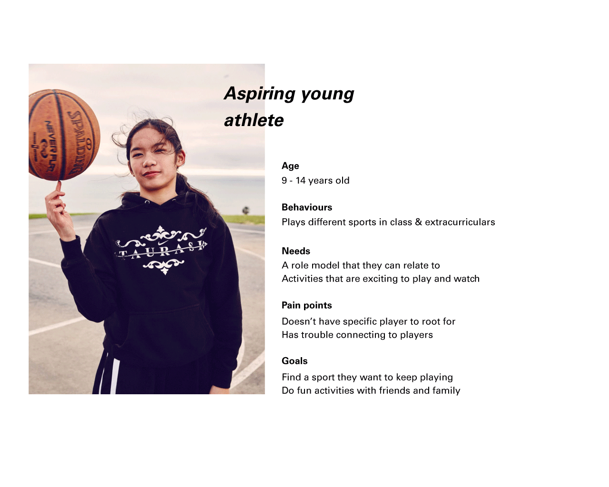

My WNBA is a mobile application that helps create a loyal fanbase by increasing engagement between young fans and the Women's National Basketball Associations through telling personal, relatable stories of pro players. My WNBA aims to foster a positive fan base culture that is grounded in empowering WNBA players.
Context
This was a 4-week long hypothetical case study that came out of a senior level experience design course. The project was done in collaboration with my teammates -Phoebe Lim, Jenny Nguyen, Christy Lum, Jessica Huang. For this project, we were tasked with finding a client with a business problem that was within the scope of the project constraints, where we as designers could come up with a meaningful digital intervention.
Role: I conducted research, contributed to the product strategy, and helped create low-high fidelity mockups (pen & paper + Sketch) for specific user flows. For the design sprint, I took upon the responsbilities of the facilitator, ensuring that we iterated quick in a lateral process.
Women's National Basketball Association
Attendance & viewership of WNBA games has been on a steady decline since 2002, making it increasingly hard to survive as an organization. Despite women's college basketball and NBA's popularity, WNBA has constantly been perceived as an unentertaining sport. Our team explored ways to change this perception and help grow WNBA's audience through a digital intervention.
WNBA game attendance between 1997 - 2017
To gain a deeper understanding of the problem area, we conducted interviews with basketball coaches, a sports editor and basketball ethusiasts. We also looked for examples of what similar fields were doing to build audiences and maintain viewership.
RESEARCH
Celebrating individuality
The NBA is largely successful because of their ability to make players into celebrities. The NBA has certain household names that are prevalent not only because they play well, but are also relatable outside the court, and have big, entertaining personalities. Rather than only being perceived as a team sport, we asked ourselves, how might we celebrate the individuality of the WNBA players?
Cognitive overload
The current website has no content strategy making it harder for a fan to engage with the players. This creates barrier to information that should be accessible and simple to digest.

WNBA player profile with large walls of text
Existing customers
During our primary research we found that tickets to the WNBA games are relatively cheap and encouraged to be bought in groups. This is why many families attend the games as a form of entertainment. With an already existing audience, I advocated to the team the opportunity to target a younger demographic through an intervention that is engaging & relevant which would create a stronger bond with the players.
Live basketball game experience
We attended an N.C.A.A. basketball game, to gain an additional understanding of the live game experience and to debunk any assumptions made through our secondary research. The game attendees ranged from university students and parents to little league players.
Photos of attendees from the N.C.A.A game
We observed an interesting behaviour where the attendees would read the team roster handout before the game started and during the game to identify the players that stood out to them. We saw this as an opportunity to familiarize the players to the audience. We also noticed a drop off in engagement after the game ended and saw the potential to create a more permanent experience beyond the live game experience.
Journey map of a rookie fan attending a WNBA game and points of opportunities for us
Revised goal
We acknowledged that sexism greatly contributed to the issue of WNBA games being perceived as unentertaining. However, tackling sexism was outside of the scope our project and would require a cultural shift of perception.
Based on our insights, we found an opportunity to cater our intervention towards an existing audience. We decided to target a younger audience between the ages of 9 and 14, because they have not yet formed solid opinions about the WNBA. We targeted the younger viewers that we considered are rookie fans, or those who are interested in the WNBA, but have not committed to the league. We chose the age group 9-14 years old because we wanted to ensure they were old enough to use or have their own mobile device.
We reminded ourselves that we weren't directly solving the issue of ticket sales nor were we aiming for a quick return. We summarized our end goal to be,
Highlight each player, their skills, and their stories outside of basketball to foster a stronger connection between them and the rookie fans.
IDEATION
Taking concept to form
With our end goal set, we conducted a week long design sprint where we were able to generate form ideas, create our prototype and conduct user testing. We looked for ways to intervene before and the after attending a live WNBA game. I took upon the role of a facilitator, ensuring that we kept our workflow at a rapid pace, fleshing out every form possible before converging into a polished idea.
Brainstorming for How Might We questions to help us scope our form ideas.
By the end of the sprint, we settled with the idea of a mobile application that follows a narrative that ties into the context of attending a WNBA game; the interactions are divided into pre-game and post-game experiences.
The idea
Using collectibles to create an added value to WNBA games, encouraging seasonal game attendance and fostering a closer connection with the players.
To encourage game attendance and to foster a stronger relationship with the WNBA players, we created an application where fans accumulate digital collectibles with every game they attend, that serves as both, mementos of the game and tangible connections to the players. These collectibles will feature items the portray the lives of the WNBA players outside of basketball. The overall experience with MyWNBA follows a narrative that ties into the context of attending a WNBA game; the interactions are divided into pre-game and post-game experiences.
Pitch video for the MyWNBA
PRE-GAME
Collecting trading cards
After scanning their ticket, the rookie fan is prompted to a pick a team they support where they will receive 3 trading cards. The more games the rookie fan attends, the more cards they collect.
Trading cards are a popular symbol in sports, and a convenient way to chunk content. It also afford a familar interacting of flipping cards.
PRE-GAME
The Underdog story
Each trading card provides access to an interactive comic about their lives before entering the WNBA.
We used the medium of an interactive graphic novel as a way to make storytelling more interesting for the younger audience, to paint a picture of the athletes' underdog story.
POST-GAME
Locker room
Post game, a notification informs the fan that the locker room has been unlocked. Through locker items, we highlight the players’ contributions in the social sector, focussing on what they advocate for outside of basketball.
The locker room is a commonplace for many young fans as they may also interact with their peers in this familiar setting. We intentionally replicated the locker room aesthetic to create a place where they feel emotionally engaged with the players.
POST-GAME
Relive the game
Rookie fans can "relive the game" by watching highlights of the game they attended. We decided to showcase game highlights to allow fans to remember integral parts of their live experience to validate their connection with the players.
Impact
The intent of MyWNBA is to cultivate a strong relationship between new fans and the players. As fans acquire new digital collectibles with every game attended, we are increasing the likelihood of return game attendance. In addition, the app is another touchpoint where fans can interact and engage with the WNBA, even after the game has ended. The various components of the app reveal different sides of the WNBA players, from their humble beginnings, to their athletic prowess and social involvement. MyWNBA presents the players as admirable figures, inspiring and empowering young athletes.